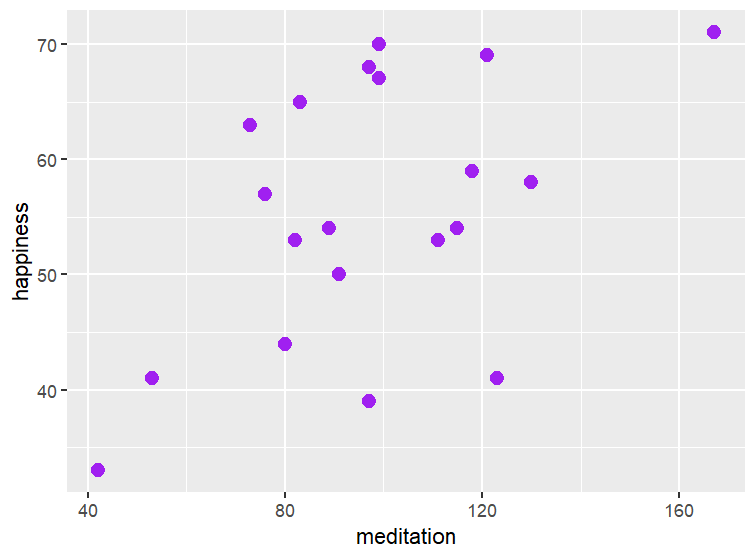
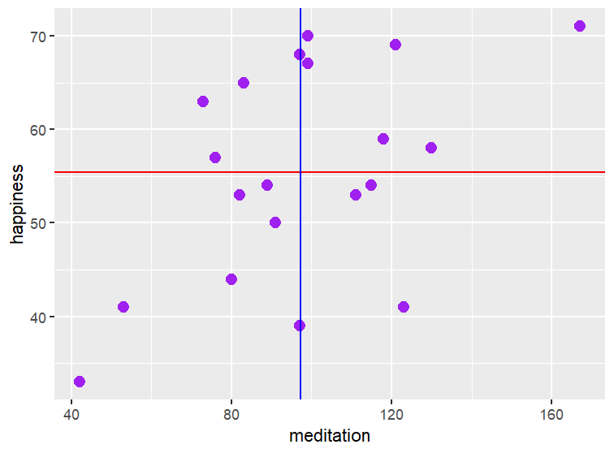
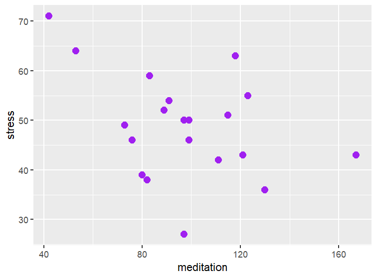
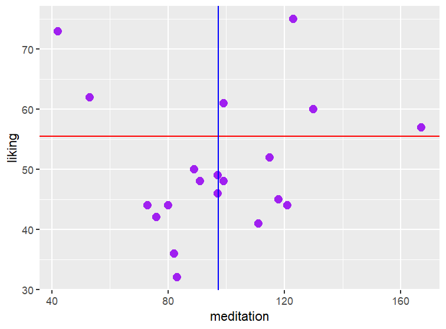

12 Correlations
13 Chapter 11: Correlations
13.1 Learning Objectives
- Know what a Pearson correlation is, and what types of data it requires.
- What phi and Cramer’s V correlations are, and what types of data they require.
- What a point-biserial is, and what type of data it requires.
- What Spearman’s rho and Kendall’s tau are, and what types of data they require.
- How to write up the results of a correlation.
13.2 Pearson Correlation Coefficient
Perhaps one of the most prevalent statistics in most social sciences is the Pearson correlation. This is prevalent enough that most introductory social science courses at least provide the very basics of what a correlation is. The general introduction into correlations tells us that correlations have three important pieces of information they tell us:
Correlations can range from -1.00 to +1.00
The strength of the relationship between variables is indicated by the magnitude of the number. The closer it gets to +/- 1.00, the stronger the relationship. A correlation of zero indicates no relationship.
The direction of the relationship is indicated by whether the value is positive or negative. Positive relationships indicate the variables move in the same direction together (when one goes up, the other goes up). Negative relationships indicate an inverse relationship between variables (when one goes up, the other goes down).
This is a great place to start, but it’s worth discussing a few more nuances of the statistic. First, one point worth mentioning is that the Pearson correlation assumes a linear relationship. So it’s worth it to check a scatterplot to make sure the relationship looks roughly linear, because if it’s something else (like a curve or a doughnut shape) the results might indicate there is no relationship between variables when there actually is… it’s just not a linear relationship.
[insert images of non-linear relationships to illustrate]
Secondly, if we were to plot a line that best fit our correlation, the Pearson correlation coefficient doesn’t provide us information about what that line would look like – that is information that we get from a regression, which is covered in section Chapter 14.
Let’s walk through an example. Let’s say I’m doing a study on meditation, and I want to see whether the number of minutes someone meditates throughout the week is associated with their happiness, their stress levels, and how much they like meditating. I collect data from 20 participants, and it looks like this:
| ID | Meditation | Happiness | Stress | Liking |
|---|---|---|---|---|
| 1 | 111 | 53 | 42 | 41 |
| 2 | 97 | 39 | 50 | 46 |
| 3 | 123 | 41 | 55 | 75 |
| 4 | 130 | 58 | 36 | 60 |
| 5 | 99 | 70 | 50 | 61 |
| 6 | 83 | 65 | 59 | 32 |
| 7 | 99 | 67 | 46 | 48 |
| 8 | 89 | 54 | 52 | 50 |
| 9 | 80 | 55 | 39 | 44 |
| 10 | 115 | 54 | 51 | 52 |
| 11 | 76 | 57 | 46 | 42 |
| 12 | 42 | 33 | 71 | 73 |
| 13 | 73 | 63 | 49 | 44 |
| 14 | 118 | 59 | 63 | 45 |
| 15 | 121 | 69 | 43 | 44 |
| 16 | 82 | 53 | 38 | 36 |
| 17 | 91 | 50 | 54 | 48 |
| 18 | 97 | 68 | 27 | 49 |
| 19 | 53 | 41 | 64 | 62 |
| 20 | 167 | 71 | 43 | 57 |
First, let’s dig into the correlational analysis between minutes spent meditating and levels of happiness. Here’s a scatterplot of the relationship, which shows that it appears to be linear, so a Pearson correlation is a good option for us to use.

The first step to understanding the correlation is understanding something we call covariance. Covariance is a way of identifying if two variables “move together” – we see some of this in our scatterplot – people who tend to meditate more also tend to have a higher level of happiness. It’s not a perfect relationship; even though participants #5 and #7 are meditating the same amount, they have different happiness scores. But as scores move higher on minutes of meditation, happiness also trends up. Mathematically, here’s what that looks like:
\(cov_{xy}= \frac{\sum^n_{i=1}(x_i-\bar{x})(y_i-\bar{y})}{N-1}\)
What covariance does is it takes each individual’s score on meditation, and subtracts the mean of mediation time (which is 97.30 in these data). It then takes each individual’s score on happiness and subtracts the mean of happiness (55.45 in these data). It then multiplies those two values together. Once that’s done, you sum those values up, and divide that total my N-1 (to adjust for the fact that our sample will slightly underestimate what’s going on in the population).

Let’s take a moment here and note that the majority of data tends to clump up in the upper right and lower left quadrants of this graph. This means that the \((x_i-\bar{x})(y_i-\bar{y})\) part of the equation will usually be positive (in the upper right quandrant, we are multiplying two positive values together, and in the lower left quadrant, we are multiplying two negative values together, which equals a positive number). Put a pin in this point, as we’ll return to it during our second example.
Covariance is a very important concept, and one that you’ll hear more throughout the rest of your statistical journey. But, there is a shortcoming of covariance: when we have a scale that is quite large as we do here, the covariance is also going to be large. As we’ve learned with other statistics, it’s helpful if we can figure out a way to standardize this value. And as you’ve seen before, standard deviation is one way we can do this. So, the equation for a Pearson correlation is:
\(r=\frac{cov(xy)}{s_xs_y}\)
This ensures that this value can never be less than -1.00 or higher than +1.00, which helps make it more interpretable among data sets that might have smaller scales (like if we are using a 1 to 5 Likert scale or a GPA).
I’ll spare you the tedious math here, and tell you that the calculations indicate r=.49, which is a moderately large correlation in most social sciences. Significance is determined in most statistical programs as a t-test:
\(t_r=\frac{r \sqrt{N-2}}{\sqrt{1-r^2}}\)
In the case of our data, this results in a t value of 2.38. Degrees of freedom are N-2 here, so our critical t value is 2.10, so we can conclude that our correlation is significant.
Because correlations are so important, it’s worth briefly walking through two more examples (and we’ll discuss them again in section Chapter 14 when we review regression).
Let’s take a look at the scatterplot for minutes of meditation and stress:

Right away, we can see that it looks very different from the previous example, because the data points are gathered in the top left and bottom right quadrants. If you think back to our formula for covariance:
\(cov_{xy}= \frac{\sum^n_{i=1}(x_i-\bar{x})(y_i-\bar{y})}{N-1}\)
you can see that for most data points in this correlation, if they are above the mean in meditation time, they are below the mean on stress, and vice versa. This means that the covariance will be negative (because a positive number times a negative number leads to a negative product), which in turn, means the correlation will be negative (r=-.41, to be exact!).
Meanwhile, if we look at the scatterplot between meditation time and liking meditation:

you will see that the data points are distributed pretty equally across all four quadrants. This means that when we sum it up, some of the positive and negative values will cancel each other out, which means our correlation will be pretty small (r=.04 in this case).
I would be remiss if I didn’t say what all statistics teachers say: Correlation is not causation. Correlations can’t be used in experiments, so based on these results, we can’t say that meditation is causing higher happiness and lower stress, they are just related. It might be the other way around (happy people and people with low stress are more likely to meditate) or there could be another causal factor (people with money have the time to meditate, and they are happier and less stressed). So, be careful in how you talk about correlations so that you’re not implying a causal link.
13.3 Other Correlations
The vast majority of the time, when someone says “correlation” they are talking about a Pearson correlation, but there are some other useful correlations that are worth knowing about. Whereas a Pearson correlation is intended for two continuous variables, we sometimes might have different types of variables where we need a correlation.
13.3.1 Phi and Cramer’s V
To start, I want to briefly address a correlation that I already hinted at in section Section 12.3 – the phi correlation. The phi is useful when we have two categorical variables, each with two categories apiece. For example, imagine we want to learn about the relationship between dog ownership and exercise:
| Takes a daily walk | Does not take a daily walk | |
|---|---|---|
| Owns a dog | 30 | 20 |
| Does not own a dog | 20 | 30 |
A chi-square is certainly one possible option here. But perhaps we’re interested in an effect size; a correlation is a useful way to gauge an effect size, since it’s a statistic that generalizes across different scales and sample sizes (this is not the case for a chi-square test value). But the phi value is very easy to get if you’ve already done a chi-square test of independence:
\(\phi = \sqrt{\frac{\chi^2}{n}}\)
For this data, we obtain a chi-square value of 4.00 and an n of 100, so the equation works out to:
\(\phi = \sqrt{\frac{4.00}{100}}=.20\)
Phi values can be interpreted mostly like a correlation, with values closer to +/-1 indicating a stronger relationship, so this is a fairly small relationship. With Pearson correlations, the direction matters; with phi, it doesn’t really matter, because it’s arbitrary which group we put in which order, as there is no amount attached to the category. So, it’s smart to also provide a table of your results so your audience can understand the nature of the relationship.
But what about if we have a chi-square where we have more than two categories in one or both variables? In this case, the appropriate calculation is a Cramer’s V:
\(V=\sqrt{\frac{\chi^2}{n \times min(r-1,c-1)}}\)
What this formula does is in the denominator, we multiply the sample size by whichever value is larger, the number of rows minus one, or the number of columns minus one. If we take the data from Section 12.3 on parental and child smoking behaviors:
| Never-smoker | Early Regular | Early Experimental | Late Experimental | |
|---|---|---|---|---|
| Non-smoker | 16 | 16 | 38 | 37 |
| Former smoker | 36 | 3 | 28 | 59 |
| Current smoker | 69 | 5 | 26 | 67 |
We obtained a chi-square value of 48.20, and we can see that we have fewer rows than columns, so:
\(V=\sqrt{\frac{48.20}{n \times (3-1)}}=.25\)
So, again, here we have a fairly small effect. Note also that if we have a chi-square with two groups in each variable, you basically end up with the formula for phi. Again, Cramer’s V is best shared with a table so the audience can understand the nature of the relationship between the variables.
13.3.2 Point-Biserial Correlation
Another helpful type of correlation is the point-biserial correlation, where we are correlating a dichotomous variable with a continuous variable. A common use of this statistic is in test development to examine the quality of an item. So, imagine that we have an item on a test that we’ve scored 1 for correct and zero for incorrect. We also have each participants total score on the test. We can correlate the correctness with the total score:
| ID | Score on Item | Score on Test |
|---|---|---|
| 1 | 0 | 44 |
| 2 | 0 | 37 |
| 3 | 0 | 24 |
| 4 | 0 | 37 |
| 5 | 0 | 34 |
| 6 | 0 | 51 |
| 7 | 0 | 66 |
| 8 | 0 | 42 |
| 9 | 0 | 36 |
| 10 | 1 | 52 |
| 11 | 1 | 68 |
| 12 | 1 | 79 |
| 13 | 1 | 85 |
| 14 | 1 | 60 |
| 15 | 1 | 58 |
| 16 | 1 | 90 |
| 17 | 1 | 84 |
| 18 | 1 | 44 |
| 19 | 1 | 87 |
| 20 | 1 | 92 |
The good news is, mathematically, the formula for the point-biserial is the same as the formula for a Pearson; if we do the calculations, we’ll see a \(r_{pb}\) of .74. This is good news for this test item! What it’s saying is that people who score well on my test tend to get this question correct, and those who score poorly on my test get this question wrong, which is what we’d expect. If we saw a negative correlation here, it means my students who score well on the exam get this question wrong, that likely means I have a bad item (either it is “tricky” so my strong students get confused and answer wrong, or perhaps I’ve made a mistake on my answer key).
You might be asking “If it’s mathematically the same as a Pearson correlation, why do we need a special statistic?” The main reason is that because one variable is dichotomous, it breaks some of the assumptions of a Pearson correlation (such as the assumption we have roughly normal distributions in both variables). It’s also a good reminder that we probably need to provide an interpretation for our audience. For example, if we did a point-biserial correlation on man and women and their scores on a test, the way we code the data is arbitrary (i.e., there’s no reason why we’d have to code men = 1 and women = 2, we can choose whatever numbers we want for each group). So, we need to add in some extra interpretation when sharing our result to clarify for our audience which group has a higher score on our continuous variable.
You might also be asking “Wait, if we’re looking at a dichotomous variable and a continuous variable, can’t we just do an independent t-test?” And… yes, you can! Really, the point-biserial is just the effect size of a t-test, so they both tell you the same thing, but sometimes putting it on a -1 to +1 scale can be helpful (like for my test development example, where test developers are very used to looking at point-biserials).
One final question you might have is that I underlined the word dichotomous a few paragraphs ago, so you may wonder “Can I use a point-biserial correlation if my variable is dichotomized?” Nope! There is another type of correlation called a biserial correlation and that is more appropriate for a dichotomized variable, because there is a distribution that underlies the dichotomous variable. I used to teach this formula to my students, but it’s not something people use much. Usually it is better to leave a continuous variable alone rather than dichotomize it; plus, biserials are fiddly and a lot of statistical programs (like SPSS) don’t even offer it as an option, so you might end up having to do the math by hand. The information is out there if you ever need it, but I’ve stopped teaching this statistic to my students because it’s so rare to use it (I have never personally needed it!)
13.3.3 Spearman’s Rho and Kendall’s Tau
The last set of alternative correlations I like to cover applies to ordinal data. Ordinal data is a little tricky to work with, and I largely avoid talking about it in introductory statistics courses, but these two values can come in useful in case you want to see if a ranked order remains the same or if it changes. As an example, let’s say that I have some students and I am ranking them on their skills in some classes:
| Student | Math | Art | Logical Reasoning | Reading |
|---|---|---|---|---|
| Adam | 1 | 12 | 2 | 11 |
| Betty | 2 | 11 | 1 | 12 |
| Calvin | 3 | 10 | 4 | 3 |
| Danielle | 4 | 9 | 3 | 4 |
| Edgar | 5 | 8 | 6 | 5 |
| Fern | 6 | 7 | 5 | 6 |
| George | 7 | 6 | 8 | 7 |
| Harriet | 8 | 5 | 9 | 8 |
| Igor | 9 | 4 | 10 | 9 |
| Jackie | 10 | 3 | 9 | 10 |
| Kevin | 11 | 2 | 12 | 1 |
| Liz | 12 | 1 | 11 | 2 |
Compare each set of scores to the math scores, and you’ll notice some trends:
Art scores are perfectly inverse of the Math scores, with the worst students Math students scoring the best on Art, and vice versa.
Logical Reasoning scores are mostly in the same order, but with lots of inversions – Betty is better than Adam in Logic, but not on Math, and so on.
Reading scores in the middle are the same as math scores, but the top and bottom scores are out of order.
I set these up to help highlight the difference between Spearman’s Rho and Kendall’s Tau. They both are useful, but they are sensitive to different things. The formula for Spearman’s Rho is the same as a Pearson correlation. So, it is sensitive to the overall order and whether it is preserved between the two measures. Kendall’s tau is a bit different. Here, it counts the number of inversions in the data, and compares it to the number of pairs of objects:
\(\tau=1-\frac{2(Number\;of\;inversions)}{N(N-1)/2}\)
So, when we look at the data and think about this, we can expect that the rho between Math and Logical Reasoning will be pretty good (the data order is mostly preserved) but our tau estimation will be lower, because there are lots of inversions. Meanwhile, the rho between Math and Reading will drop quite a bit because the 4 most extreme scores have swapped, but tau will look a little better because the other 8 have no inversions.
Here are the actual values we obtain if we do the math:
| Variables | Rho | Tau |
|---|---|---|
| Math and Art | -1.00 | -1.00 |
| Math and Logical Reasoning | .96 | .82 |
| Math and Reading | -.40 | -.09 |
Our expectations bear out here – Math and Art have a perfectly inverse relationship, so we see a perfect -1.00 correlation for both rho and tau. For Math and Logical reasoning, we do see that the flip-flops in the data drop Tau much more than they do Rho. And for Math and reading, we see that the four swapped scores lead to a much lower rho than tau.
So which one is the right one to use? It ultimately depends on what you care more about in your research. If the general order of rankings matters most, use rho; if inversions matter, use tau. When in doubt, rho is conceptually similar to a correlation, so that tends to be used more commonly.
13.4 Writing the Results of a Correlation
The good news here is that writing correlations is typically very brief and straightforward for the most part. When sharing the results of a correlation, you want to convey the following information to your audience:
What type of correlation you are using (if you just say “correlation” your reader will assume it’s a Pearson correlation)
The correlation value.
Some journals also like to have degrees of freedom for Pearson correlations.
For Pearson, point-biserial, Spearman, and Kendall correlations, you typically provide significance values. For phi and Cramer’s V, significance values are not typically given, but if you want to provide them, they will be the same value as the related chi-square significance.
In the case of phi, Cramer’s V, and point-biserials, an interpretation of the direction of the results – again, this is because the direction of these statistics is arbitrary so you must interpret them for your audience.
The correlation between meditation and happiness was moderately strong, r(18)=.49, p<.001.
A phi correlation suggests a moderate correlation, \(\phi\)=.20. Specifically, people who own a dog are more likely to take a daily walk.
A point-biserial correlation indicates the test item is not functioning appropriately, \(r_{pb}\) = .74, p<.001. Specifically, students who tend to score higher on the overall test tend to do poorly on this item.
A Spearman correlation suggests that there is a strong association between ranked scores for Math and Logical Reasoning, \(\rho\)=.96, p<.001.